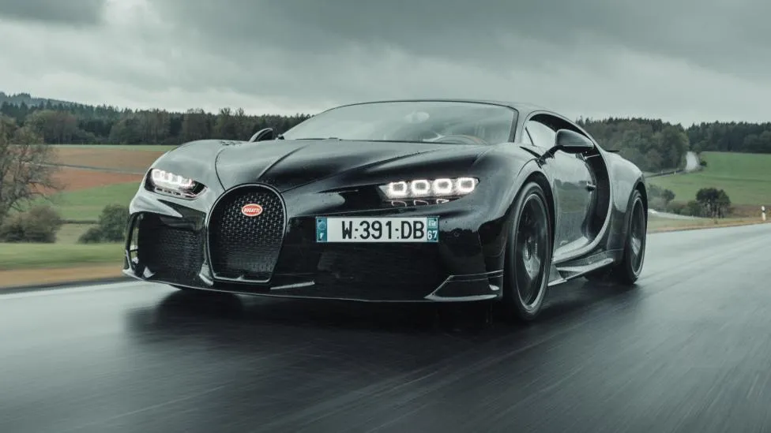
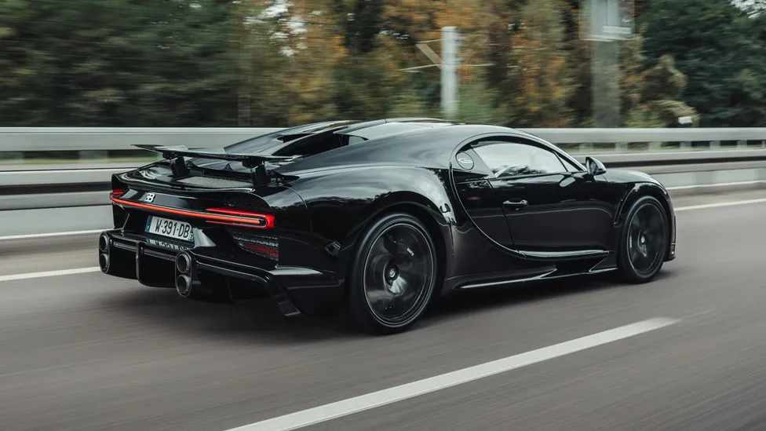
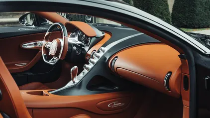

Ecco a voi: l'auto di serie più veloce al mondo. Ebbene sì, la Super Sport, pensata per le corse, si basa sulla Bugatti Chiron che Andy Wallace ha guidato fino a raggiungere i 490 km/h (304,773 mph) nel 2019, ed è dotata di un motore V16 quad-turbo da 8 litri che eroga 100 CV in più rispetto alla Chiron standard. In totale, si tratta di 1.578 CV a vostra disposizione. In realtà, c'è solo una differenza rispetto alla Chiron che ha infranto la barriera dei 480 km/h: la velocità massima è stata limitata a soli 440 km/h (273 mph).